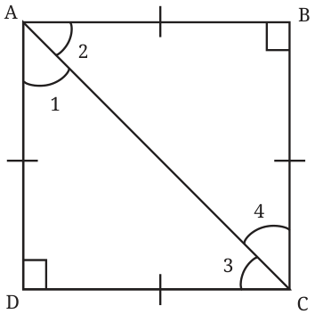

Since a square is a special type of rectangle, all the properties of a rectangle hold true for a square.
Verify if this is true by going through geometric reasoning in Deduction 1 and Deduction 2, and see if they apply to a square as well. Property 1: All the sides of a square are equal to each other. Property 2: The opposite sides of a square are parallel to each other. Property 3: The angles of a square are all \(90 ^{\circ}\) . Property 4: The diagonals of a square are of equal length and they bisect each other at \(90 ^{\circ}\) . There is one more special property of a square.
What are the measures of \(\angle 1\), \(\angle 2\), \(\angle 3\), and \(\angle 4\)? See if you can reason and/or experiment to figure this out!

In \(\triangle ADC\), we have,
\(\angle 1 + \angle 3 + 90 = 180\)
Since \(AD = DC\), we have \(\angle 1 = \angle 3\).
Thus, \(\angle 1 = \angle 3 = 45 ^{\circ}\) .
Similarly, find \(\angle 2\) and \(\angle 4\). Thus, we have another property of a square - Property 5: The diagonals of a square divide the angles of the square into equal halves. This can also be expressed as - The diagonals of a square bisect the angles of the square.